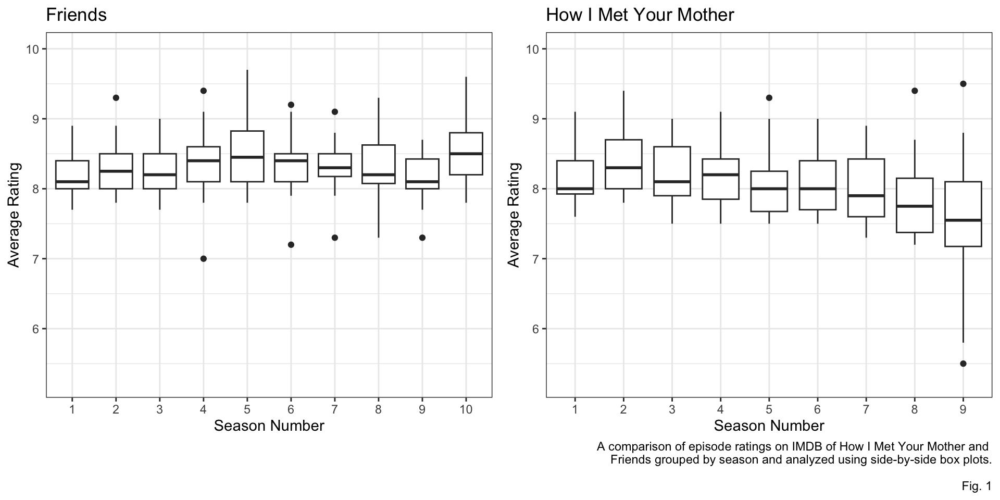
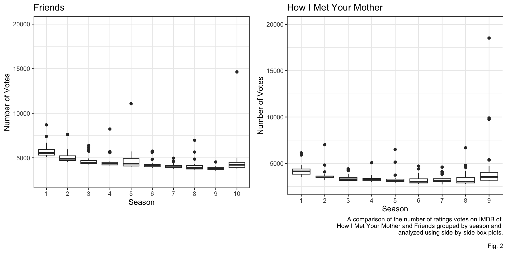
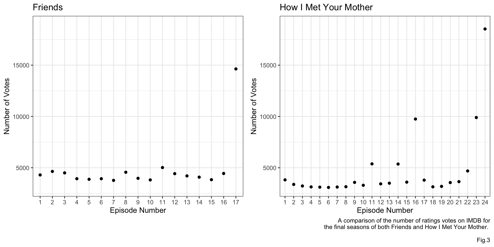
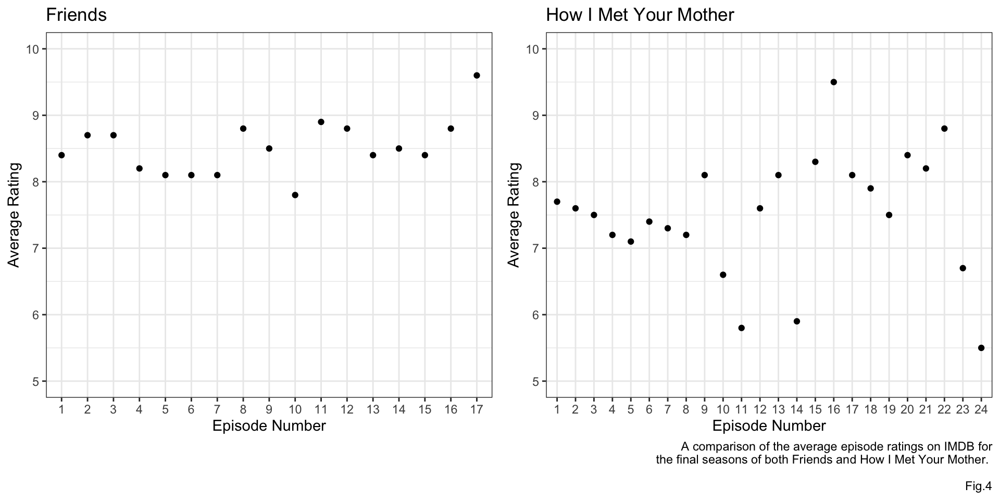

New York, New York: A Comparative Analysis of “Friends” and “How I Met Your Mother”
Introduction
The following analysis compares two TV shows, “How I Met Your Mother” and “Friends”. The data for this project is from IMDB and the variables of interest are the episode number, the season number, the average rating of each episode, and the number of ratings votes each episode got. “How I Met Your Mother” was a sitcom on CBS that aired for 9 seasons totaling 208 episodes from 2005-2014, over that span the average episode rating was 8.03. “Friends” was a sitcom that aired on NBC for 10 seasons from 1994-2004. Over that time it aired 235 episodes with an average IMDB episode rating of 8.33. These two sitcoms have many similarities primarily that they are both about adults in their 20’s living in New York City.
Analysis
Figure one shows the average episode rating by season, “Friends” shows fairly steady ratings by season with season 5 and 10 (the final season) being the highest just under a rating of 8.5. “How I Met Your Mother” shows a consistent decline in ratings, with season 9 (the final season) having the lowest average rating. An interesting observation about season 9 is that it contains both the highest rated episode and the lowest rated episode, this will be investigated more later.
Figure two compares the number of ratings votes each episode got grouped by season and analyzed using side-by-side box plots. It can be seen that the average number of votes per episode decline by season, however both see an uptick in the final season and both have one large outlier in that final season.

Final season
Below in figure 3 an analysis of number of votes by episode in the final season can be seen. The number of votes by episode for “Friends” in the final season is consistent with the average number of votes over the course of the series, up until the final episode which received 14633 votes and is the second highest rated episode ever with a rating of 9.6. The number of votes for “How I Met Your Mother” contain a few more points that stray for the rest of the data, episode 16 received 9,749 votes and is the shows highest rated episode with a rating of 9.5. The final two episodes received 9,894 and 18,527 votes respectively with the final episode of the show receiving a rating of 5.5 and taking the crown for worst rated episode.

The following figure shows the number of votes the final episode of “How I Met Your Mother” received was an outlier nearly four standard deviations from the expected value.
3.965
The following figure shows the number of votes the final episode of “Friends” received was an outlier greater than three standard deviations from the expected value.
3.843
Figure 4 shows the average rating of each episode in the final season of both “How I Met Your Mother” and “Friends”. “Friends” has similar ratings of episodes in the final season around the 8.5 mark. The final episode of “Friends” has the highest rating in the season. While “How I Met Your Mother” has quite the spread of values, including the final episode which has the lowest rating of the season.

Discussion
While similar in setting, genre, and plot the trends in average episode ratings of “How I Met Your Mother” and “Friends” differ quite a bit. “Friends” has consistently high episode ratings by season ultimately resulting in a high rated final season and a final episode that received the second highest overall rating. While “How I Met Your Mother” had steadily decreasing average episode ratings by season, finishing with a worst rated final season and a worst rated final episode. Both shows had final episodes that received an extremely high number of votes 3.843 standard deviations from the expected value from the final season for “Friends” and 3.965 for “How I Met Your Mother”, however those for “Friends” were mostly high ratings and those for “How I Met Your Mother” were mostly dismal.
References
https://www.imdb.com/title/tt0460649/?ref_=tt_ov_inf https://www.imdb.com/title/tt0108778/?ref_=nv_sr_srsg_0